|
Searching for civil and church records
is the foundation of genealogy. Here are those of several ancestors, gathered from the digitized
Drouin collection.
In the early 1940s
the Institut Drouin microfilmed all the records deposited at the court record offices since the beginning of the colony. They are now
digitized and available online.
B =
BAPTISM M =
MARRIAGE S = BURIAL (SÉPULTURE)
|
|
THE CHARETTES |
|
MATHIEU CHORET, SÉBASTIENNE VEILLON
1st
generation |
|
MARRIAGE
MATHIEU CHORET
SÉBASTIENNE VEILLON
MARCH 4, 1647
LA ROCHELLE |
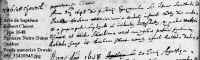
B Robert
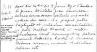
copy of the record
|
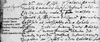
B Joseph
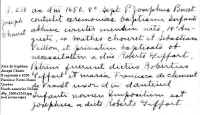
copy of the record
|
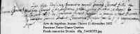
B Jeanne
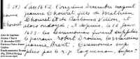
copy of the record
|
|
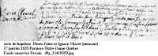
B Pierre the elder and Ignace (twins)
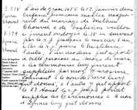
copy of the record
|
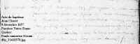
B Jean
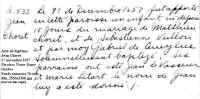
copy of the record
|
B Pierre the younger
no register found
( 21-01-1662 Beauport chapel) (not found in the parish of
N.D. Qc either)
M Pierre, see
below
|
.
|
|
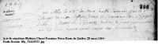
S Mathieu Choret
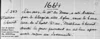
copy of the record
|
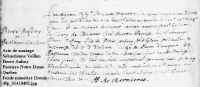
M Veillon-Aufroy
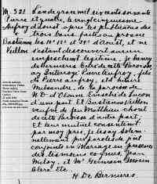
copy of the record
|
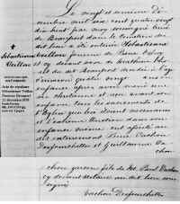
S Sébastienne
no original
register found
|
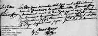
S Pierre Aufroy
(Sébastienne's 2nd husband; no signature despite
the mention)
|
|
|
|
PIERRE LEJEUNE CHORET, MARIE-ANNE BEAUGIS
2nd
generation |
|
B Pierre the younger
not found yet
( 21-01-1662 Beauport chapel)
|
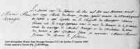
B Marie-Anne Beaugis
|
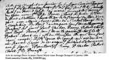
M Choret - Beaugis
|
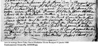
M Pierre the elder Choret, brother of Pierre the younger.
(double wedding)
|
|
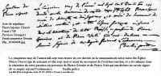
S Pierre Lejeune
|
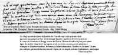
S Marie-Anne Beaugis
|
.
|
.
|
|
|
|
PIERRE CHORET, ANGÉLIQUE TURCOT
3rd
generation |
|
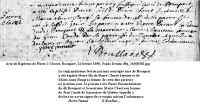
B Pierre Choret
son of Pierre the younger
|
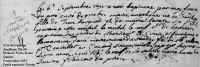
B Angélique
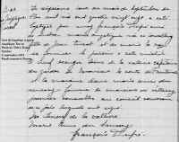
copy of the B
|
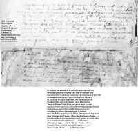
M Choret-Turcot
|
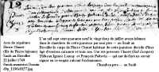
S Pierre
|
|
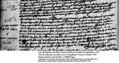
M Messier-Turcot
(Angélique's 2nd marriage + B of a grandson on the same register
page)
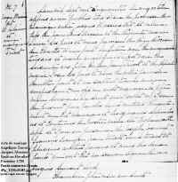
copy of the M
|
S of Angélique still to be found
(nothing seen at the Sault; she apparently died before 08-1765, according to a note on the M record
of her daughter Charlotte)
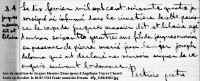
S Jacques Messier
(copy)
|
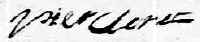
Pierre's signature on the M record of his brother-in-law
Louis Turcot, June 13, 1726, in St-Laurent, Montréal. It is the only
time Pierre signs; we will have to wait until the 9th generation
to find another signature.
|
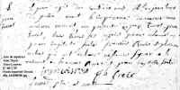
.
S Jean Turcot, Angélique's father
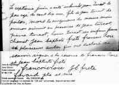
Copy of the S |
|
|
|
JOSEPH CHORET, MARIE-ANNE LEMAY
4th
generation |
|
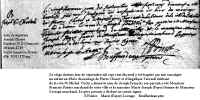
B Joseph Choret
|
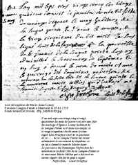
B Marie-Anne Lemay
|
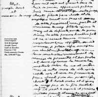
M Joseph Choret
(triple wedding)
|
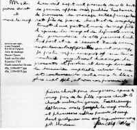
M Pierre Choret,
Joseph's brother
|
|
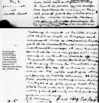
M Charlotte
Joseph's sister
|
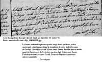
S Joseph Choret
|
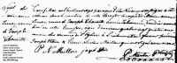
S Marie-Anne
|
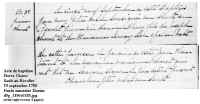
B Pierre, one of Joseph's sons (he marries Marguerite
Laplante on 31-01-1774. He is a day labourer and is buried on 01-12-1828 in Montréal)
|
THE MYSTERY OF THE 4TH AND 5TH GENERATIONS:
Here are the facts known to date from the records of the Drouin collection
and the PRDH:
Two Choret brothers, Pierre and Joseph, marry two Lemay sisters.
Each couple has a child named Jean-Baptiste. Pierre's
apparently went by Louis (ref.: PRDH). These two cousins
marry two Lorain sisters.
Problems: some marriage records are missing from the Drouin collection, the
PRDH is incomplete and mixes up certain people and certain
data when compared with the records.
As for the genealogist Brother Jean-Benoît Charette,
he knows only of Pierre's existence, and attributes Joseph's children to him
(p.101), including two Jean-Baptistes. As for those two, he
links them to spouses whose details were not found in
the records. Among Pierre's children (p. 106),
Jean-Baptiste (Louis according to the PRDH) is missing. He gives Robert the nickname
Louis (p.175).... So the Choret brothers, the Lemay sisters, the
two Jean-Baptistes and the Lorain sisters are somewhat tangled up... |
|
The records opposite concern PIERRE, Joseph's brother.
The two, and their descendants, are often confused. |
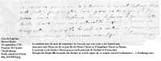
B Pierre Choret
Joseph's brother
M Choret-Lemay, see above
|
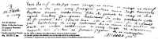
B Marie-Catherine Lemay
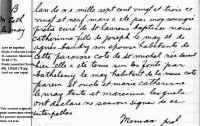
Copy of the B record
|
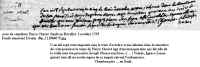
S Pierre Choret
Joseph's brother
|
|
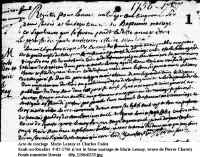
M Cadot-Lemay
(Marie Lemay's 2nd marriage; she also had children
from this 2nd union)
|
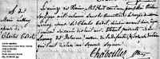
S Marie Lemay,
widow of Pierre Choret and, by her 2nd marriage, wife of Charles Cadot.
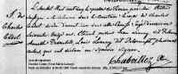
S Charles Cadot
|
This Jean-Baptiste
apparently went by LOUIS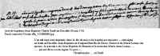
B Jean-Baptiste
born in 1752, son of Pierre, nephew of Joseph
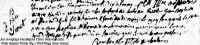
2nd version of the B
|
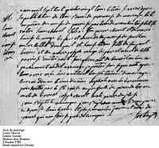
M Louis Choret - Louise Lorrain in 1783 (according to
the PRDH this
Louis is Jean-Baptiste, son of Pierre Choret)
S Louis Choret
(according to the PRDH)
|
|
|
|
JEAN-BAPTISTE CHORET, M.-JOSEPHTE LORAIN 5th
generation |
|
B Jean-Baptiste 1749
(for this J.-Baptiste the PRDH gives only the B: no M or
S, and no children)
|
B M-Josephte Lorain (probably
between late 1755 and 1760 in Riv. des Prairies;
years are missing from that parish's registers; not found to date,
nor in Pte-aux-Trembles.)
|
M Choret-Lorain
Rivière-des-Prairies, 13-10-1774; the registers for 1771 to 1774
no longer exist for this parish, so we have to rely on the notarized
contract.
|
Below is the copy of the marriage
contract drawn up before the notaire (notary) Chatellier.
Source: microfilm, Archives nationales.
The document is not very legible, but the parentage of the
bride and groom can be clearly seen.
|
|
Page 1
Page 2
|
Page 3
.
Page 4
|
S Jean-Baptiste
S Marie Lorain
|
M_Lorain-Ranger
(Marie-Josephte Lorain's parents according to Brother
Benoît)
M_Lorain-Ranger
Copy
|
|
|
|
JACQUES CHARETTE, M-A. MARGUERITE VARIN 6th
generation |
|
B Jacques
(he is baptized under the name Louis. According to Br.
Benoît he would be the 3rd child, but he did not find the B. And
in that case he could only have been born in May 1777. I found no B
at that date at the Sault, in St-Laurent or in Montréal.
So this child baptized Louis lived under another first name, and I
think it is Jacques, our ancestor of the 6th generation. This is based
on cross-checking all the data on all the children in the family.
|
B Marie-Amable Varin
|
M Choret - Varin
|
S Jacques
(98 1/2 years old? He would rather be 88 1/2; see the B. The
priest got his arithmetic wrong, or was misinformed. It is
common to find approximate ages in the records.)
(In fact Jacques would be the 5th child. When Br. Benoît finds a
B for a first name with no M or S, and finds an M with no B or S, it is
often one and the same person. The age given on the S, even
if wrong, suggests that Jacques was born in April 1781.
|
|
|
|
JACQUES CHARETTE, THÉOTISTE DUBOIS 7th
generation |
|
B Jacques
|
B Théotiste
|
M Charette -Dubois
|
S Théotiste
|
|
S Jacques
|
.
|
.
|
M Dubois - Papineau
(Théotiste's parents)
|
|